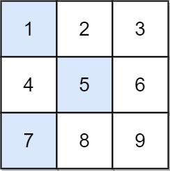

1289. 下降路径最小和 II
逐行 DP，但上一行只留三样东西：最小值、次小值、最小值所在列；本列撞上最小值就退用次小，O(n²) 免建全表。
思路
- 常规转移要「上一行除 j 外的最小值」，逐格扫是 O(n³)；只记 最小 + 次小 即可 O(n²)。
- 若上一行最小值不在本列 → 直接用；恰好在本列 → 用次小值（次小值必然覆盖其余所有列）。
- 第一行没有约束（
fcol = -1，永远不撞列），从全 0 的虚拟状态起步。 - 每行扫完就地更新
fmin / smin / fcol，负数、并列最小值都天然正确。
图解
最优解
1class Solution {2 public int minFallingPathSum(int[][] grid) {3 int n = grid.length;4 // 上一行的最小值 fmin、次小值 smin、最小值所在列 fcol（-1 表示还没有上一行）5 int fmin = 0, smin = 0, fcol = -1;6 for (int[] row : grid) {7 int gmin = Integer.MAX_VALUE, gsmin = Integer.MAX_VALUE, gcol = -1;8 for (int j = 0; j < n; j++) {9 // 斜降不能同列：上一行的最小值恰好在本列时，只能退而用次小值10 int pre = j == fcol ? smin : fmin;11 int cur = pre + row[j];12 if (cur < gmin) { gsmin = gmin; gmin = cur; gcol = j; }13 else if (cur < gsmin) gsmin = cur;14 }15 fmin = gmin; smin = gsmin; fcol = gcol;16 }17 return fmin;18 }19}题目
给你一个 n x n 整数矩阵 grid ，请你返回 非零偏移下降路径 数字和的最小值。
非零偏移下降路径 定义为：从 grid 数组中的每一行选择一个数字，且按顺序选出来的数字中，相邻数字不在原数组的同一列。
示例 1：

输入：grid = [[1,2,3],[4,5,6],[7,8,9]] 输出：13 解释： 所有非零偏移下降路径包括： [1,5,9], [1,5,7], [1,6,7], [1,6,8], [2,4,8], [2,4,9], [2,6,7], [2,6,8], [3,4,8], [3,4,9], [3,5,7], [3,5,9] 下降路径中数字和最小的是 [1,5,7] ，所以答案是 13 。
示例 2：
输入：grid = [[7]] 输出：7
提示：
n == grid.length == grid[i].length1 <= n <= 200-99 <= grid[i][j] <= 99
题面取自力扣当前版本。
数据快照 2026-11-04。题面版权归力扣所有，本站点仅供本人学习使用，请勿对外发布。